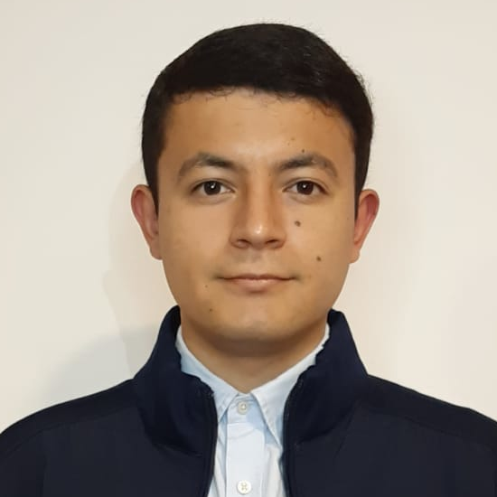
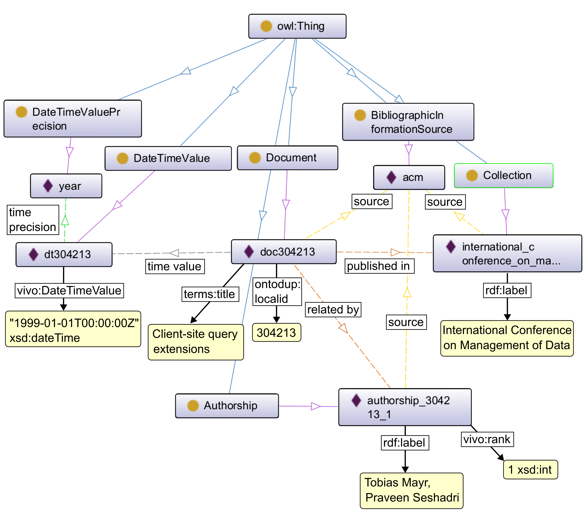
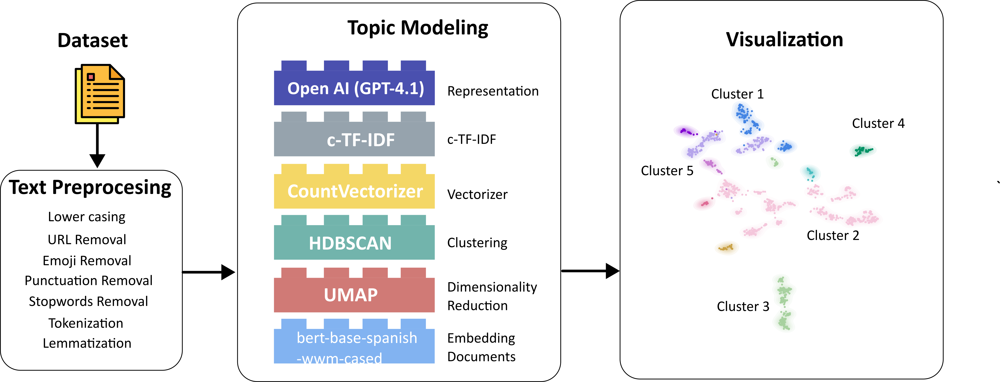
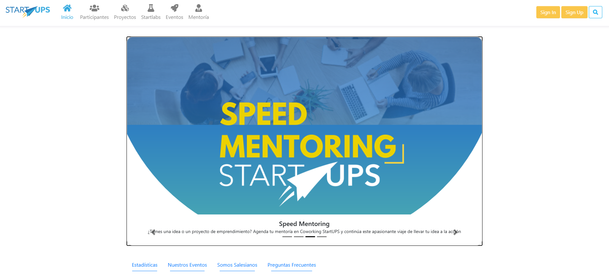
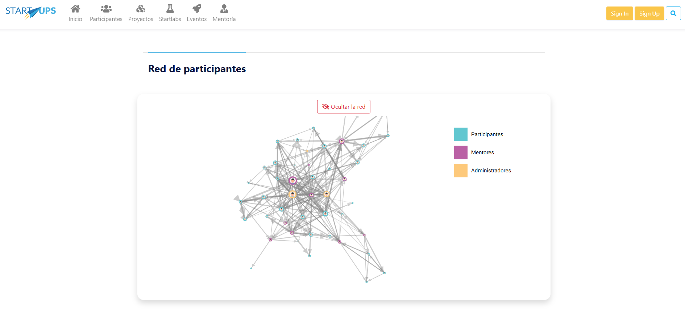
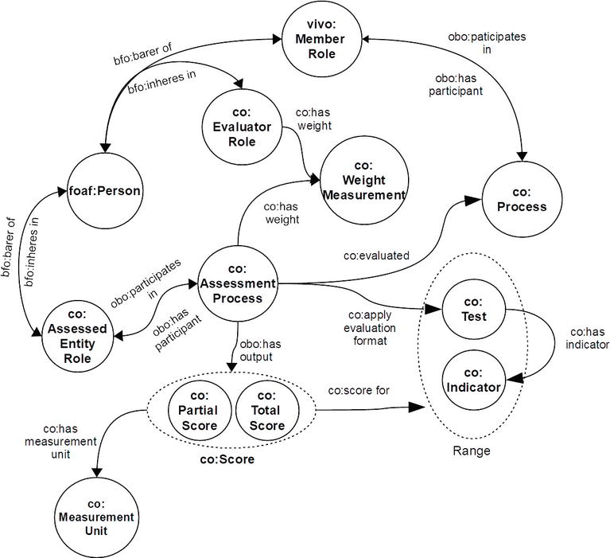
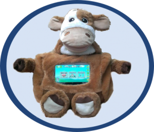

Oct 2023 — Actualidad
Doctorado en Tecnologías de la Información y las Comunicaciones
Universidad de Vigo · Vigo, España
Especialista en inteligencia artificial aplicada y gestión del conocimiento, con más de diez años construyendo sistemas en producción sobre ontologías, modelos de lenguaje y grafos de conocimiento.
Descargar CV
Soy especialista en inteligencia artificial aplicada y gestión del conocimiento en instituciones de educación superior e industria, con más de diez años de trayectoria. Mi experiencia está respaldada por mi participación en SIRO, la conducción técnica del ecosistema CREAMINKA durante seis años, la gestión del conocimiento del ecosistema de investigación en la PUCE mediante técnicas de IA, y el desarrollo de módulos inteligentes para el scouting tecnológico de la industria española en la Universidad de Vigo.
“Soluciones de IA que no solo sean precisas, sino también explicables, gobernables y útiles para la toma de decisiones.”
A lo largo de este recorrido he construido y mantenido sistemas en producción basados en ontologías, modelos de lenguaje, embeddings y modelado de conocimiento, además de publicar más de veinte artículos científicos en revistas de alto impacto y congresos internacionales.
En el ámbito académico curso el Doctorado en Tecnologías de la Información y las Comunicaciones en la Universidad de Vigo; soy Máster en Análisis y Visualización de Datos Masivos por la Universidad Internacional de la Rioja e Ingeniero de Sistemas por la Universidad Politécnica Salesiana.
Mis líneas más recientes giran en torno a la deduplicación gobernada de entidades, la recomendación semántica y el análisis de tópicos con LLMs.
Deduplicación gobernada de entidades en grafos de conocimiento académico.

Pipeline de coincidencia de entidades para grafos de conocimiento académico que, en lugar de insertar enlaces directos, representa cada decisión de fusión como una aserción gobernada con estado, evidencia, procedencia y metadatos operacionales. El enfoque incorpora explícitamente principios de gobernanza y trazabilidad sobre los resultados de matching, alineado con las exigencias de IA explicable y auditable.
Cuatro capas: ontológica (vocabularios en RDF/Turtle), reglas en formato .pie para materializar enlaces gobernados, generación y evaluación de pares candidatos con múltiples matchers, y capa de gobierno que produce aserciones con metadatos de proveniencia. Evaluado sobre DBLP–ACM y DBLP–Scholar con cuatro flujos reproducibles.
Dataset experimental publicado en Zenodo: 1.4 GB en N-Quads con resultados sobre cuatro configuraciones, licenciado CC BY 4.0 para reproducibilidad e inspección basada en grafos.
Discurso político en redes sociales durante las elecciones de Ecuador 2025.

Estudio sobre el discurso político difundido en redes sociales por medios de comunicación ecuatorianos durante el ciclo electoral de 2025. Combina recolección sistemática en cuatro plataformas, modelado de tópicos con BERTopic y análisis de evolución temporal de las narrativas dominantes.
Recolección de 8.174 publicaciones de Facebook, Instagram, X y TikTok provenientes de 48 cuentas de medios ecuatorianos, entre el 1 de enero y el 29 de junio de 2025, incluyendo métricas de interacción (reacciones, comentarios, compartidos, visualizaciones).
Corpus público de 8.174 posts con clusters temáticos y evolución temporal, publicado en Zenodo (76.5 MB, CC BY 4.0). Presentado en ETCM 2025 (Quito) y publicado en las actas de IEEE.
Plataforma web del Ecosistema de Emprendimiento de la Universidad Politécnica Salesiana.

Punto de entrada para estudiantes, docentes y emprendedores universitarios al sistema de coworking, bootcamps y proyectos de innovación de la universidad. Integrada con el ecosistema CREAMINKA para gestión de competencias y participación en proyectos.
Aplicación web en la nube, con backend de servicios y modelo de datos semántico que articula a los participantes con eventos, proyectos y módulos de evaluación de competencias. Soporta los eventos reCREATE y rETHOS.
Plataforma desplegada en producción y operativa desde 2020 en coworking.ups.edu.ec. Soporte continuo a los eventos anuales de emprendimiento universitario.

Ecosistema inteligente de gestión del conocimiento y la investigación universitaria.

Ecosistema integral para acelerar la producción de conocimiento, valorizar la investigación y facilitar la identificación de colaboradores potenciales en universidades, mediante ontologías e inteligencia artificial. Pieza ancla de mi trayectoria: atravesó publicaciones, capítulos de libro y despliegues operativos durante más de seis años en la UPS.
Cuatro capas: sistema transaccional StartUPS para datos de agentes y competencias; componente de microservicios para parser, autenticación, CRUD, reportes y análisis; repositorio de tripletas RDF que modela el conocimiento del ecosistema; y aplicaciones móvil y web como interfaz de usuario. Incluye un modelo de evaluación de competencias en cuatro niveles con autoevaluación, coevaluación y heteroevaluación, y minería sobre SCOPUS y Science Direct.
Sistema robótico inteligente de soporte a la terapia para niños con TEA.

Sistema integral de apoyo tecnológico para el diagnóstico y la intervención de niños con Trastorno del Espectro Autista, desarrollado con la Fundación CIMA. Mi primera incursión profesional en la integración de ontologías con tecnologías de asistencia.
Arquitectura híbrida con tres componentes: herramientas móviles para terapistas y familias, sala multisensorial instrumentada para sesiones de intervención, y asistente robótico para tareas de mediación. El conocimiento sobre pacientes, terapias e instrumentos se estructura mediante ontologías que permiten razonamiento sobre el progreso y planificación de actividades.
Población beneficiaria: niños con TEA, familias y equipos multidisciplinarios de Educación Especial, Estimulación Temprana, Terapia de Lenguaje y Psicología. Publicaciones derivadas en IEEE ARGENCON 2016 (Buenos Aires) y CONIITI 2018 (Bogotá).
Ontologías, modelos de lenguaje grandes (LLMs), embeddings, ingeniería de prompts, algoritmos de clasificación de texto, clustering y análisis de redes sociales.
LangChain, BERTopic, LDA, HuggingFace transformers, OpenAI / GPT.
Python, R, Java, JavaScript.
Google Cloud Platform, Microsoft Azure, Firebase, Algolia.
PostgreSQL, Oracle, MongoDB, GraphDB, Firestore, SQLite.
Tableau, Power BI, Looker Studio. Modelado de procesos con Visio.